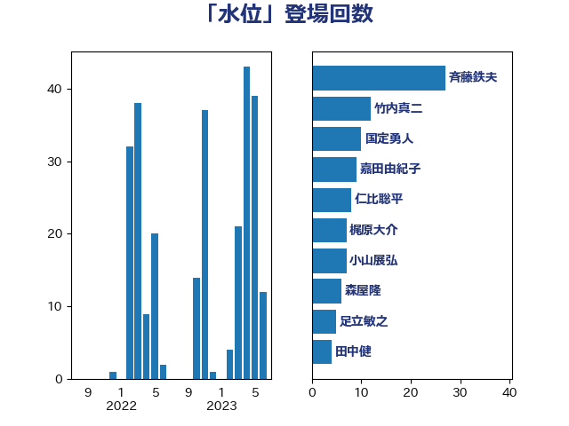

単語「水位」

| 斉藤鉄夫 | 公明党 | 27 回 |
| 竹内真二 | 公明党 | 12 回 |
| 国定勇人 | 自由民主党 | 10 回 |
| 嘉田由紀子 | 無所属 | 9 回 |
| 仁比聡平 | 日本共産党 | 8 回 |
| 梶原大介 | 自由民主党 | 7 回 |
| 小山展弘 | 立憲民主党 | 7 回 |
| 森屋隆 | 立憲民主党 | 6 回 |
| 足立敏之 | 自由民主党 | 5 回 |
| 田中健 | 国民民主党 | 4 回 |
| 伊波洋一 | 無所属 | 4 回 |
| 一谷勇一郎 | 日本維新の会 | 4 回 |
| 神津たけし | 立憲民主党 | 3 回 |
| 漆間譲司 | 日本維新の会 | 3 回 |
| 塩田博昭 | 公明党 | 3 回 |
| 下条みつ | 立憲民主党 | 3 回 |
| 高橋千鶴子 | 日本共産党 | 2 回 |
| 青木愛 | 立憲民主党 | 2 回 |
| 豊田俊郎 | 自由民主党 | 2 回 |
| 蓮舫 | 立憲民主党 | 2 回 |
| 石井啓一 | 公明党 | 2 回 |
| 田所嘉徳 | 自由民主党 | 2 回 |
| 牧野たかお | 自由民主党 | 2 回 |
| 渡辺創 | 立憲民主党 | 2 回 |
| 池下卓 | 日本維新の会 | 2 回 |
| 大野泰正 | 自由民主党 | 2 回 |
| 吉田宣弘 | 公明党 | 2 回 |
| 鬼木誠 | 立憲民主党 | 1 回 |
| 青柳仁士 | 日本維新の会 | 1 回 |
| 青山大人 | 立憲民主党 | 1 回 |
| 長友慎治 | 国民民主党 | 1 回 |
| 鈴木敦 | 国民民主党 | 1 回 |
| 輿水恵一 | 公明党 | 1 回 |
| 藤岡隆雄 | 立憲民主党 | 1 回 |
| 穀田恵二 | 日本共産党 | 1 回 |
| 福田昭夫 | 立憲民主党 | 1 回 |
| 石井苗子 | 日本維新の会 | 1 回 |
| 田村貴昭 | 日本共産党 | 1 回 |
| 深澤陽一 | 自由民主党 | 1 回 |
| 津島淳 | 自由民主党 | 1 回 |
| 泉田裕彦 | 自由民主党 | 1 回 |
| 河野太郎 | 自由民主党 | 1 回 |
| 水岡俊一 | 立憲民主党 | 1 回 |
| 櫛渕万里 | れいわ新選組 | 1 回 |
| 横沢高徳 | 立憲民主党 | 1 回 |
| 榛葉賀津也 | 国民民主党 | 1 回 |
| 森田俊和 | 立憲民主党 | 1 回 |
| 木村英子 | れいわ新選組 | 1 回 |
| 木原稔 | 自由民主党 | 1 回 |
| 岸田文雄 | 自由民主党 | 1 回 |
| 山本佐知子 | 自由民主党 | 1 回 |
| 小森卓郎 | 自由民主党 | 1 回 |
| 小林一大 | 自由民主党 | 1 回 |
| 寺田静 | 無所属 | 1 回 |
| 大岡敏孝 | 自由民主党 | 1 回 |
| 冨樫博之 | 自由民主党 | 1 回 |
| 中野英幸 | 自由民主党 | 1 回 |
| 中村裕之 | 自由民主党 | 1 回 |
| 中川康洋 | 公明党 | 1 回 |
| 下野六太 | 公明党 | 1 回 |